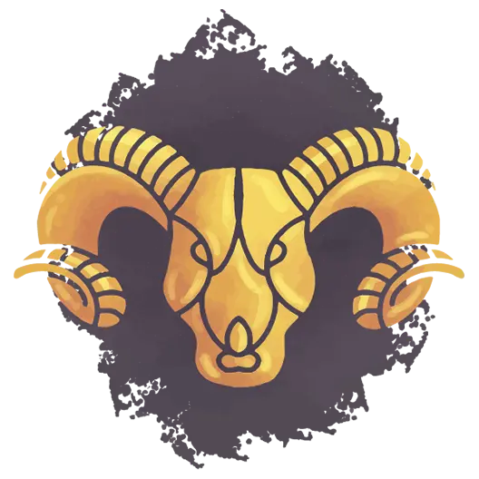
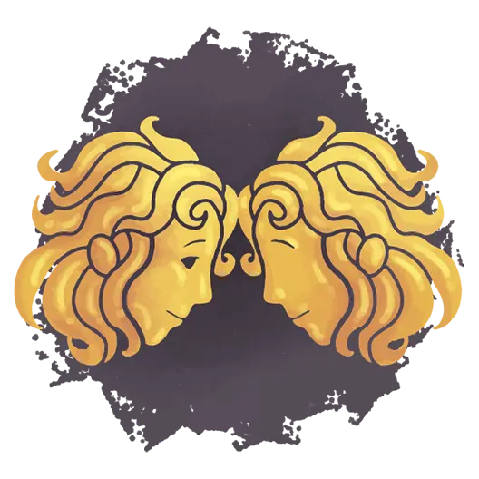
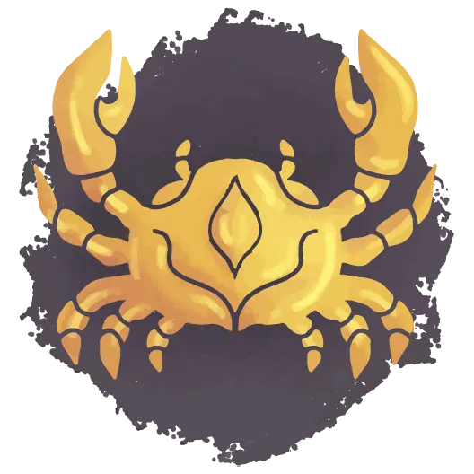
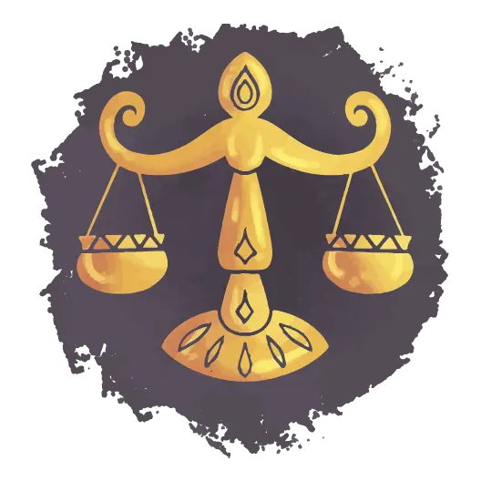
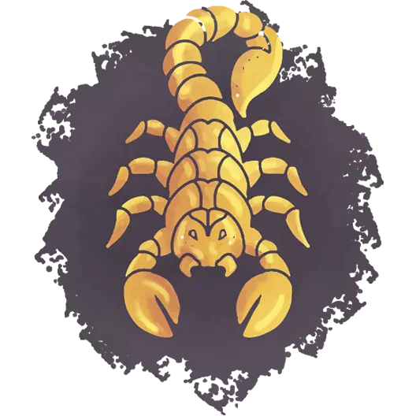
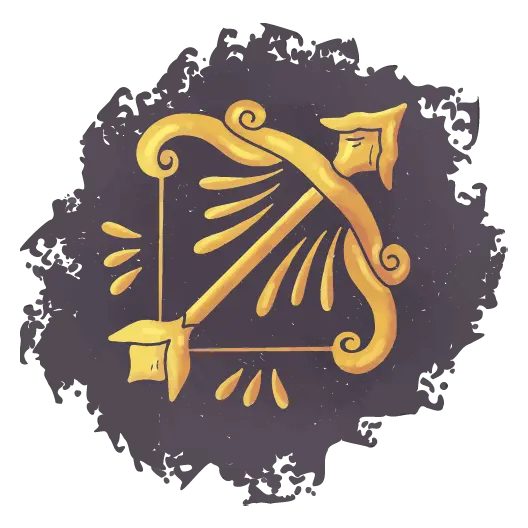
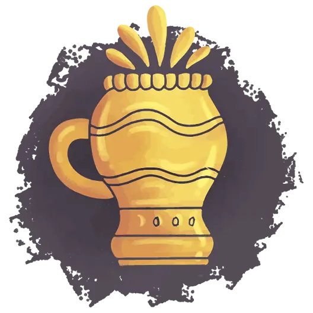

In astrology, the Moon plays a crucial role in illuminating the landscape of our inner selves, acting as a mirror to our emotional world and subconscious undercurrents. It represents our instinctive reactions, the nurturing we need and give, our emotional responses, and the deepest desires that drive us beneath the surface of our conscious mind. The position of the Moon in our birth chart offers profound insights into our intuitive nature, the ways we seek comfort and safety, and our inherent emotional patterns that shape our interactions with the world.
Unlike the Sun, which symbolizes our conscious identity and outward personality, the Moon delves into the realms of our innermost being, revealing the hidden aspects of our psyche that are not immediately apparent to others or even ourselves. By understanding the role of the Moon, we gain access to a deeper comprehension of our emotional needs, fears, and the unconscious motivations that influence our behavior, leading to a more integrated and authentic expression of our true self.
Your Moon Sign holds significant weight in astrology, as it governs the realms of intuition, emotions, and the hidden gifts that lie within the depths of your psyche. This lunar placement sheds light on how you process and express your feelings, your instinctive reactions to situations, and the kind of environment that nurtures your soul. It reveals the softer, more vulnerable aspects of your personality, including your needs for emotional security and the way you seek comfort in times of distress.
The Moon Sign also taps into your intuitive capabilities, often manifesting as a gut feeling or an emotional insight that guides you beyond the realm of rational thought. These hidden gifts, influenced by your Moon Sign, can range from a heightened empathetic ability to connect with others on a deep emotional level, to a creative imagination that finds expression in various forms of artistry. By exploring and embracing the qualities of your Moon Sign, you unlock a treasure trove of emotional and intuitive strengths that can enhance your personal relationships, creative endeavors, and journey towards self-awareness.
The Moon in astrology represents much more than a celestial body in the sky; it symbolizes our innermost emotional landscape, intuition, and the subconscious parts of our personality that we often keep hidden from the outside world. While the Sun Sign portrays our outward identity and ego, the Moon Sign delves into the depths of our emotional and psychological foundation, offering insights into our instinctual reactions, comforts, and what nurtures our soul. This deeper understanding helps to create a more nuanced and complete astrological profile, highlighting the importance of recognizing our Moon Sign to fully grasp the complexity of our nature.
Exploring the Moon Sign can unveil layers of our persona that are not immediately apparent, including our inner vulnerabilities and strengths. It is the key to unlocking the door to our private self, the part of us that we might only reveal in trusted company or perhaps not at all. This aspect of astrology invites us to look beyond the surface-level characteristics associated with our Sun Sign, encouraging a journey of self-discovery that acknowledges the multifaceted nature of human emotions and behaviors. Understanding your Moon Sign can lead to profound insights about your emotional needs, instinctive reactions, and the unconscious motivations that drive your actions.
The Moon's influence in astrology is deeply tied to our emotional and intuitive spheres, acting as a mirror reflecting our innermost feelings and instincts. Its position in our birth chart signifies how we process emotions, our innate reactions to external stimuli, and the way we express our feelings to the world. The Moon's energy is nurturing and protective, guiding us through the ebb and flow of our emotional tides with its cyclical nature, reminding us of the constant flux present in our emotional lives and the need for balance and adaptation.
This celestial body's connection to intuition cannot be understated; the Moon governs our subconscious undercurrents, the unspoken and often inexplicable knowledge that guides us without the need for rational explanation. It is this lunar intuition that often leads us through life's challenges, offering a sense of inner guidance and understanding that transcends logical thought. By tuning into the Moon's influence, we can unlock a deeper connection with our intuitive selves, enhancing our ability to navigate life's complexities with a sense of inner knowing and emotional intelligence.
The Moon in our astrological chart acts as a reflective surface, mirroring our deepest needs, desires, and the emotional nourishment we seek for fulfillment. It is through the Moon that we gain insight into our innermost cravings, often those we keep hidden from the external world. These needs and desires are not just whims but are integral to our emotional well-being and overall sense of security. The Moon's placement gives us clues about what environments, relationships, and emotional climates will best support our growth and happiness. It reveals our instinctual way of seeking comfort and the type of nurturing we require to thrive, whether it's through close-knit relationships, creative expression, solitude, or adventure.
Understanding the Moon's influence provides a roadmap to our subconscious, offering a path to align our external life with our internal needs. When we live in harmony with our Moon sign, we tap into a powerful source of emotional energy and satisfaction, leading to a more authentic and fulfilling existence. Acknowledging and honoring our Moon sign can lead to profound self-awareness and self-care practices that cater to our deepest emotional needs, fostering an environment where our true desires can flourish. It's a journey of uncovering the layers of our psyche to embrace and nurture our authentic selves, guided by the luminescent glow of our personal Moon.

Lunar Aries individuals possess an inner world that is vibrant, energetic, and constantly in motion. This fiery Moon sign imbues them with an instinctual need for action and a pioneering spirit, often leading them to navigate life with a bold and assertive approach. Their emotional responses are swift and passionate, reflecting Aries' cardinal nature, which craves initiation and isn't afraid to venture into the unknown. This impulsive energy can sometimes lead to rapid mood shifts, as Lunar Aries individuals are quick to react but also to recover, embodying the essence of resilience and renewal akin to the first signs of spring.
The emotional landscape of Lunar Aries is marked by a straightforward and honest expression of feelings. They value authenticity and are not ones to hide their true emotions, even if it means showing vulnerability. Their hidden gift lies in their innate courage and the ability to inspire others through their own fearless approach to life's challenges. If your Moon is in Aries, you often lead by example, demonstrating the strength it takes to follow one's passions and instincts, even in the face of adversity.
The impulsiveness characteristic of Lunar Aries plays a significant role in their emotional expression. They are known for their spontaneity and a sometimes abrupt manner of dealing with emotions, preferring to address issues head-on rather than dwell on them. This direct approach is a double-edged sword, as it allows for immediate release of feelings but can also lead to hasty reactions without fully considering the consequences. Their emotional process is akin to a spark - quick to ignite but also quick to extinguish, allowing them to move forward without holding onto past grievances.
This impulsiveness, however, is also where Lunar Aries' hidden gifts lie. It fosters an environment for rapid growth and the ability to quickly adapt to new situations. In their core, Lunar Aries individuals possess an unwavering optimism and a childlike wonder for the world, which fuels their relentless drive and zest for life. Their capacity to rebound from setbacks with even greater determination is a testament to their fiery spirit, teaching us the value of embracing our emotions as catalysts for change and personal evolution.
Lunar Aries individuals are blessed with the hidden gifts of courage and initiative, often propelling them into new ventures with enthusiasm and bravery that many admire. Their emotional nature is imbued with an innate sense of fearlessness, allowing them to face challenges head-on without hesitation. This boldness is not just about taking risks but also about their willingness to be pioneers in their personal and professional lives, charting new territories with zeal. The Moon's influence in Aries bestows a spontaneous spirit, enabling these individuals to act on their instincts and passions with confidence, often inspiring others to step out of their comfort zones.
This courage is complemented by an exceptional initiative. Lunar Aries individuals possess a proactive attitude, always ready to jumpstart projects and lead the way. Their dynamism and leadership qualities emerge naturally, making them excellent motivators and trailblazers. These attributes are particularly beneficial when channeled towards constructive endeavors, where Lunar Aries' ability to initiate change and spark new beginnings can lead to significant personal growth and transformation. Their courage and initiative are their superpowers, enabling them to turn challenges into opportunities and dreams into reality.
At the heart of Lunar Taurus is the quest for comfort, stability, and serenity, making those with their Moon in Taurus seekers of tranquility in their emotional lives. They find solace in the familiar and the stable, gravitating towards environments and relationships that offer a sense of security and predictability. This deep need for a peaceful existence is rooted in their connection to the Earth element, which governs Taurus, highlighting a strong desire for grounding and connection to the natural world. The essence of Lunar Taurus is reflected in their appreciation for the simple pleasures of life, whether it's the comfort of a well-prepared meal, the beauty of a serene landscape, or the tactile pleasure of luxurious fabrics.
This search for serenity is not merely about indulgence but a fundamental aspect of their emotional well-being. Lunar Taurus individuals thrive in harmonious settings where they can slowly but steadily build their lives, laying down roots that provide a solid foundation for their emotional security. If your Moon is in Taurus, your approach to life is methodical and deliberate, valuing consistency and reliability in all things. This desire for a calm and stable environment is a testament to your deep-seated need to nurture your friends and family with enduring and tangible comforts, creating a sanctuary that not only soothes but also sustains your spirit.
For those with their Moon in Taurus, the emotional landscape is deeply intertwined with the pursuit of security and stability. Their emotional needs are centered around creating a life that feels safe and secure, both materially and emotionally. This desire for stability is not just about financial wealth but a deeper need for a predictable and reliable environment where they can express their affections and build lasting relationships. Lunar Taurus individuals seek consistency in their emotional connections, valuing partners and friends who are steadfast and dependable. Their approach to relationships is grounded and practical, offering a level of loyalty and commitment that forms the bedrock of lasting bonds.
This pursuit of security extends to their home and family life, where they invest significant effort in creating a comfortable and prosperous environment. The emotional satisfaction of Lunar Taurus individuals is closely linked to their ability to cultivate a sense of permanence and harmony in their personal domains. They find great joy in the process of making their surroundings beautiful and functional, reflecting their innate connection to the Earth and its bounty. By nurturing their spaces and relationships with a steady and loving hand, they fulfill their deep-seated need for a secure and stable foundation upon which they can flourish emotionally.
The hidden gifts of Lunar Taurus lie in their remarkable patience and unwavering loyalty, qualities that shine through in their relationships and endeavors. Their patient nature is akin to the slow and steady growth of nature itself, embodying the principle that time brings maturity and wisdom. This patience allows them to approach life's challenges and opportunities with a calm and measured demeanor, rarely rushing into situations without thorough consideration. It is this thoughtful pacing that often leads to their enduring successes, as they build their lives and relationships with careful attention and dedication.
Lunar Taurus' loyalty is as steadfast as the earth upon which they stand, providing a reliable and secure foundation for those in their inner circle. Their commitment to their loved ones is unwavering, often going to great lengths to ensure the well-being and happiness of those they care about. This loyalty is not just a duty but a heartfelt devotion, reflecting the depth of their emotional bonds. In friendships and partnerships, Lunar Taurus individuals are the pillars of strength and reliability, offering a sanctuary of trust and security. These hidden gifts of patience and loyalty not only define their character but also enrich the lives of those around them, creating lasting and meaningful connections.

Individuals with their Moon in Gemini possess an insatiable curiosity and a constant quest for knowledge that defines much of their emotional landscape. This air sign, governed by Mercury, bestows upon Lunar Geminis a keen intellect and a desire to explore a variety of subjects, ideas, and cultures. Their emotional fulfillment is closely tied to mental stimulation and the exchange of ideas, making them adept at navigating diverse social settings where communication is key. The quest for knowledge is not merely an academic pursuit for Lunar
Geminis, but a means to connect with others and the world around them, seeking to understand the intricate tapestry of human experience through a multitude of perspectives.
This inherent need to gather information and learn new things drives Lunar Geminis to be extremely adaptable, able to blend into various social situations with ease. Their minds are always active, piecing together information like a puzzle, which makes them excellent conversationalists and storytellers. However, this constant mental activity can also lead to restlessness, as they seek new stimuli to satisfy their intellectual cravings. If your Moon is in Gemini, the journey of learning is endless, with each piece of knowledge adding another layer to your understanding of the emotional and social world you inhabit.
Lunar Geminis are characterized by their emotional fluidity, able to navigate through their feelings with the same ease and agility they apply to their intellectual pursuits. This fluidity allows them to adapt quickly to changing emotional landscapes, both their own and those of the people around them. They are remarkably versatile in their emotional responses, which can be both a strength and a challenge. On one hand, it enables Lunar Geminis to cope with a wide array of situations without becoming too emotionally bogged down. On the other hand, it can sometimes lead to a perceived lack of depth in their emotional connections, as they may shy away from delving too deeply into any one feeling or situation.
The adaptability of Lunar Geminis is a double-edged sword; it endows them with the capacity to understand and empathize with a diverse range of emotional states and perspectives. This makes them excellent mediators and communicators, capable of seeing multiple sides of an issue. However, their tendency to flit from one emotional state to another can also leave them, and those close to them, feeling a bit uncertain about where they stand emotionally. Finding balance in this fluidity is key for Lunar Geminis, allowing them to maintain their natural adaptability while also fostering deeper, more stable emotional connections.
The versatility of Lunar Geminis is one of their most remarkable hidden talents, allowing them to excel in various endeavors with ease and grace. This versatility stems from their ability to assimilate information quickly and apply it in creative ways, leading to innovative solutions and ideas. Their minds are a fertile ground for innovation, where concepts from disparate fields can come together to form something entirely new and groundbreaking. This talent for innovation is not just limited to their professional or creative pursuits but extends to their approach to life's challenges, where they often find unconventional yet effective solutions.
Moreover, Lunar Geminis' ability to adapt and change with the circumstances makes them invaluable in dynamic environments where flexibility and quick thinking are paramount. They are natural problem solvers, using their wit and intellect to navigate complex situations with a fresh perspective. This capacity for innovation, coupled with their innate versatility, allows Lunar Geminis to bring a unique spark to everything they do, transforming the mundane into the extraordinary. Embracing these talents fully can lead Lunar Geminis to not only achieve personal fulfillment but also to make significant contributions to the world around them, driven by their endless curiosity and creative minds.

At the core of Lunar Cancer lies a profound emotional depth and an innate need to nurture and be nurtured. Governed by the Moon, Cancer is its natural domicile, where the lunar qualities of emotion, intuition, and maternal instincts are most at home. Individuals with their Moon in Cancer possess an exceptional capacity for empathy, allowing them to tune into the emotions of those around them with remarkable sensitivity. If your Moon in Cancer, this deep emotional connection drives your instinct to care for others, creating a nurturing presence that offers comfort and security. The heart of Lunar Cancer is like a sanctuary, where warmth and compassion prevail, making you likely to be one of the confidants and caregivers in your circles. Your emotional expression is rich and often tied to your environment, particularly your home, which you regard as the ultimate haven of comfort and care.
The emotional landscape of Lunar Cancer is inherently tied to their sense of security and belonging. They form deep emotional attachments, particularly to family and close friends, and these relationships are central to their well-being. The strength of their emotional bonds can be both a source of great comfort and a vulnerability, as they may struggle with feelings of worry or clinginess in their desire to protect these bonds. Nonetheless, their capacity to create a nurturing and emotionally rich environment is unparalleled, offering a depth of care and empathy that fosters strong, lasting relationships.
Navigating the emotional depths of Lunar Cancer can be likened to a voyage across the ever-changing seas of their feelings and moods. Their emotional state is deeply influenced by the lunar cycles, leading to fluctuations that can be both intense and profound. Lunar Cancers have a unique ability to feel things deeply, which includes not just their own emotions but also the emotional undercurrents of their environment. This intense emotional sensitivity requires them to develop coping mechanisms that allow them to shield themselves from emotional overload, often seeking solace in the comfort of their homes or in the company of close family and friends.
Understanding and managing their deep emotional waters is a crucial aspect of Lunar Cancer's journey. They may find themselves retreating into their shells when the world becomes too harsh, using their intuition to navigate through difficult emotional terrain. Learning to balance their need for emotional security with the need to face challenges is a lifelong process for those with their Moon in Cancer. As they master this balance, they harness their emotional depth as a source of strength, allowing them to extend their nurturing energy beyond their immediate circle and touch the lives of others in meaningful ways.
The hidden strengths of Lunar Cancer lie in their powerful intuition and strong protective instincts, which serve as guiding lights in both their personal lives and the lives of those they care for. Their intuition is almost psychic in nature, allowing them to perceive beyond the surface and understand the unspoken feelings and needs of others. This deep intuitive sense is a gift that enables Lunar Cancers to respond to situations with a level of empathy and understanding that few other signs can match. It is this intuitive understanding that forms the foundation of their protective nature, as they can sense potential threats or discomforts to their loved ones often before they become apparent.
Lunar Cancers' protective instincts are not only about safeguarding their loved ones but also about preserving the emotional well-being of their inner circle. They are fiercely loyal and will go to great lengths to ensure the safety and security of those they hold dear. This protective nature extends to their environment as well, as they create safe havens that shield against the outside world's chaos. Their ability to intuit and protect is a testament to their deep connection with the lunar energies, embodying the nurturing and safeguarding qualities of the Moon. These hidden strengths, when recognized and nurtured, enable Lunar Cancers to create profound emotional connections and foster environments where everyone can thrive.
Lunar Leos shine with a radiance that emanates warmth and generosity, characteristics that define their approach to life and relationships. Governed by the Sun, even when positioned in the Moon, Leo imbues individuals with a natural inclination towards grandeur, hospitality, and a magnanimous spirit. This lunar placement nurtures a heartfelt desire to share their abundant energy and resources, making Lunar Leos some of the most generous souls. They take immense pleasure in spreading joy, often through grand gestures or the simple act of giving their time and attention. Their warmth is not just an outward expression but a genuine reflection of their inner being, where love and generosity hold the throne. This inherent radiance attracts others to them, creating a circle of influence where Lunar Leos can express their nurturing and protective instincts.
The generosity of Lunar Leos extends beyond material gifts; it encompasses a willingness to share their inner light, offering encouragement and inspiration to those around them. They possess an innate ability to uplift spirits, making others feel cherished and valued. This trait is a cornerstone of their personality, fostering deep and loyal relationships. The warmth of Lunar Leo creates an environment where creativity and self-expression are celebrated, encouraging a mutual exchange of inspiration and support. Their generous nature, coupled with their radiant presence, has the power to bring warmth to even the coldest of places, making Lunar Leos true beacons of light in their communities.
The emotional landscape of Lunar Leo is marked by a complex interplay between pride and vulnerability, elements that shape their interactions and self-perception. Lunar Leos possess a strong sense of self and a deep-seated pride in their identity and achievements. This pride is not merely about ego; it's about a profound connection to their inner worth and the creative expressions of their being. However, beneath this confident exterior lies a layer of vulnerability that Lunar Leos guard fiercely. They crave recognition and affirmation, not from a place of vanity, but as a reflection of their need for emotional connection and validation of their worth.
This vulnerability is often shielded by their regal demeanor, making it a sacred space that only a trusted few are allowed to see. Lunar Leos' emotional well-being is closely linked to how their personal contributions and presence are received by those around them. When they feel appreciated and loved, their emotional radiance shines even brighter, but when faced with indifference or rejection, their vulnerability can lead to a wounded pride that takes time to heal. Navigating this delicate balance between pride and vulnerability is a key aspect of Lunar Leo's emotional journey. Recognizing and embracing their vulnerability as a strength allows them to forge deeper, more authentic connections, enriching their emotional world with genuine interactions that honor their need for both admiration and emotional intimacy.
The hidden gifts of Lunar Leo lie in their remarkable creativity and innate leadership qualities, traits that, when nurtured, can lead to significant personal and communal growth. Lunar Leos are naturally creative souls, often finding unique and expressive outlets for their vibrant inner life. This creativity is not confined to the arts; it manifests in all areas of their lives, from problem-solving to personal style, and in the way they infuse everyday moments with flair and drama. Their creative endeavors are often characterized by a distinct personal signature, a blend of heart and spectacle, that makes their work stand out. Embracing this creative gift allows Lunar Leos to not only find personal fulfillment but also to inspire and motivate others to explore their own creative potentials.
Leadership is another intrinsic gift of Lunar Leo, stemming from their ability to command attention and respect through their charisma and confidence. They lead with a blend of authority and warmth, making them approachable yet formidable leaders. Their leadership style is often characterized by a desire to see those around them thrive, using their influence to empower and elevate others. This altruistic approach to leadership, combined with their creative vision, enables Lunar Leos to lead by example, inspiring innovation and boldness in their teams and communities. When Lunar Leos fully embrace and refine these gifts of creativity and leadership, they can achieve remarkable feats, not just for themselves but for the collective, leaving a lasting impact that resonates with the luminous energy of their lunar sign.
Lunar Virgos are epitomized by their precision, a characteristic that permeates through every aspect of their lives, bringing a sense of order and clarity that is both comforting and efficient. Governed by Mercury, this Earth sign endows individuals with a meticulous and analytical approach, especially in emotional contexts. They possess an innate ability to dissect and understand the complexities of their feelings and those of others, often seeking to organize and make sense of their emotional world with the same diligence they apply to their external tasks. This pursuit of clarity allows Lunar Virgos to navigate life with a practical and methodical approach, minimizing chaos and maximizing understanding. Their need for order is not just about control but stems from a deeper desire for harmony and efficiency, making their environments and relationships well-structured and reliable.
The precision of Lunar Virgo also extends to their communication, where they express themselves with thoughtfulness and care, choosing their words to convey the exact meaning intended. This clarity of expression is a boon in their personal and professional relationships, enabling them to articulate their needs, desires, and concerns effectively. However, their quest for order can sometimes lead to over-analysis, especially in matters of the heart, where emotions defy neat categorization. Despite this, their natural inclination towards clarity and organization often serves as a grounding force, not only for themselves but also for those around them, providing a clear path through the often murky waters of emotional expression and interpersonal dynamics.
For Lunar Virgos, emotional expression is often channeled through practicality, manifesting in acts of service and a keen attention to the details that contribute to the well-being of their loved ones. They may not always verbalize their affections in grand, romantic gestures, but their love is evident in the meticulous care they put into their actions. Whether it's ensuring the comfort of their home, offering solutions to problems, or simply being there with a listening ear, Lunar Virgos show their emotions by making themselves useful and improving the lives of those around them. This practical approach to emotions is a reflection of their earthy nature, which values tangible expressions of care over abstract declarations of affection.
This method of emotional expression is deeply ingrained in their desire for perfection and efficiency, leading them to often prioritize the needs of others above their own. Lunar Virgos find satisfaction in knowing they have contributed positively to someone's life, even in the smallest of ways. However, this practicality can sometimes be misunderstood by those who expect more traditional forms of emotional expression. For Lunar Virgos, understanding and adapting to this unique emotional language is key, as it reveals the depth and sincerity of their feelings, which are rooted in a genuine desire to support and nurture.
Service and perfectionism stand as the hidden virtues of Lunar Virgo, shaping their approach to life and relationships in profound ways. Their service-oriented nature is not just about helping others but about improving the world around them, one practical step at a time. This desire to serve stems from a deep-seated belief in the value of work and the satisfaction derived from a job well done. Lunar Virgos are often the unsung heroes in their communities, taking on tasks that others might overlook and executing them with precision and care. This dedication to service is driven by their perfectionist tendencies, which compel them to strive for excellence in all they do, whether for themselves or others.
Perfectionism, while often seen as a double-edged sword, is a virtue in the hands of Lunar Virgo, motivating them to constantly improve and refine their skills and contributions. This relentless pursuit of perfection is applied with equal fervor to their personal growth and the assistance they offer to others, embodying a form of altruism that seeks not just to help but to elevate. However, Lunar Virgos must also navigate the challenges that come with perfectionism, such as self-criticism and unrealistic standards, learning to balance their drive for improvement with self-compassion and acceptance. When harnessed positively, their perfectionism and service-oriented nature become powerful tools for personal and communal betterment, revealing the true depth of Lunar Virgo's hidden virtues.

Lunar Libras carry within them an innate need for balance, which manifests as a relentless pursuit of peace and fairness in all aspects of their lives. Governed by Venus, this Air sign endows individuals with a keen sense of harmony, not only in their external surroundings but also in their internal emotional landscapes. Lunar Libras are naturally inclined towards diplomacy, often acting as the mediators in conflicts, striving to understand all sides of an argument to achieve a fair resolution. This strong sense of justice is not merely intellectual but deeply emotional, as Lunar Libras feel most at peace when there is harmony in their relationships and environment. Their ability to maintain equilibrium makes them cherished companions, capable of creating an atmosphere of calm and understanding even in the most turbulent situations.
The pursuit of balance for Lunar Libras also extends to their personal sense of self, where they constantly weigh their own needs against those of others. This can sometimes lead to indecision, as they strive to find the most equitable solution, not wanting to cause upset or disharmony. However, this same trait makes them exceptionally considerate and thoughtful partners and friends, always attuned to the emotional needs and well-being of those around them. The balance Lunar Libras seek is not just an external goal but a reflection of their deep desire for inner peace and stability, guiding their actions and decisions in the pursuit of a harmonious life.
For those with their Moon in Libra, emotional equilibrium is closely tied to the quality and state of their relationships. Lunar Libras thrive in partnerships and social settings where mutual respect and understanding are the norms, as their emotional well-being is significantly influenced by the harmony in their interpersonal connections. They possess a natural aptitude for seeing things from another's perspective, which fosters empathy and a genuine interest in the happiness and comfort of their companions. This deep-seated need for balance drives Lunar Libras to invest considerable effort in maintaining healthy, equitable relationships, where give-and-take is practiced with grace and fairness.
However, this focus on balance and harmony can sometimes lead Lunar Libras to compromise their own needs or avoid confronting issues that might disrupt the peace. Their challenge lies in finding a true equilibrium, where their own emotional needs are met while also catering to those of others. Recognizing that true harmony involves addressing and resolving conflicts, rather than merely avoiding them, is a crucial lesson for Lunar Libras. Embracing this aspect of their emotional nature allows them to foster relationships that are not only peaceful but also deeply fulfilling and authentic, grounded in mutual respect and understanding.
Lunar Libras are endowed with a refined aesthetic sense, a hidden talent that goes beyond a mere appreciation for beauty. This innate affinity for aesthetics is evident in their surroundings, personal style, and even in the way they approach their relationships and projects. They have an eye for harmony and balance, not just in visual terms but in creating environments that are peaceful and pleasing to the senses. This talent extends to their ability to create beauty in their interactions and communications, often using their diplomatic skills to smooth over rough edges in relationships and social settings, much like an artist bringing balance and coherence to a piece of art.
In addition to their aesthetic sensibility, Lunar Libras possess a remarkable talent for mediation. Their ability to objectively see various sides of an argument and to empathize with differing viewpoints makes them natural mediators. This skill is not only valuable in resolving conflicts but also in fostering a deeper understanding and cooperation among disparate parties. Lunar Libras can navigate complex social dynamics with grace, promoting unity and consensus with a gentle and persuasive diplomacy. These hidden talents of aesthetic sense and mediation not only enrich the lives of Lunar Libras but also contribute positively to the well-being and harmony of their communities, making them invaluable members of any group or relationship.

Lunar Scorpios are known for their profound emotional depths, where passion and mystery intertwine to form the core of their being. Governed by Pluto, this Water sign endows individuals with an intense emotional nature that seeks to explore the complexities of the human experience. Their emotions are not superficial but are deeply rooted in the very essence of their psyche, often hidden from the view of the outside world. This enigmatic nature is part of their allure, drawing others into their complex and intriguing world. Lunar Scorpios feel things deeply, and their emotional experiences are marked by extreme highs and lows, each carrying a significant meaning and lesson. This passionate approach to life is driven by a desire to connect on a profound level, seeking truth and authenticity in all interactions, which often leads to transformative experiences both for themselves and those they closely engage with.
The mystery that surrounds Lunar Scorpios is not a facade but a genuine aspect of their personality, protecting their vulnerable core with a layer of intensity and secrecy. Their emotional depth is a double-edged sword, providing them with the capacity for significant emotional insight, but also leading to periods of introspection and solitude as they navigate their complex inner world. This depth of emotion and the accompanying introspective nature allow Lunar Scorpios to develop a unique understanding of the human condition, making them adept at recognizing the unseen and unspoken in others. Their lives are a constant exploration of the boundaries between the known and the unknown, the light and the dark, making their emotional journey a compelling and transformative experience.
The emotional landscape of Lunar Scorpios is characterized by intensity and an inherent capacity for transformation. Their feelings are powerful and consuming, often leading them to profound introspection and personal evolution. This intensity is not limited to their own experiences but extends to their interactions with others, where they seek deep and meaningful connections. Lunar Scorpios are not interested in surface-level engagements; they crave emotional authenticity and are willing to explore the shadows to achieve it. This fearless dive into the depths of emotion can lead to transformative outcomes, not just for themselves but also for those they are close to. Their presence can be catalytic, prompting significant change and growth in their relationships.
This transformative nature is a hallmark of Lunar Scorpio, manifesting as a continual process of death and rebirth in their emotional world. They have an innate ability to rise from the ashes of their experiences, often emerging stronger and more insightful than before. This cycle of transformation is deeply connected to their capacity for self-reflection and their willingness to confront the uncomfortable aspects of their psyche. Through this process, Lunar Scorpios develop a resilience that is unmatched, using their experiences as fuel for their personal evolution. Their journey through the emotional depths teaches them valuable lessons about the nature of change and the power of regeneration, making them adept at navigating the complexities of life with courage and insight.
Lunar Scorpios possess hidden powers of resilience and regeneration, traits that enable them to navigate the most challenging circumstances with strength and grace. Their resilience is born out of their experiences in the emotional depths, where they learn to withstand intense pressures and emerge unscathed. This ability to endure and adapt to various situations is a testament to their inner fortitude, allowing them to face adversity with a calm and determined demeanor. Lunar Scorpios' capacity for regeneration is equally remarkable, as they have the unique ability to transform themselves and their circumstances, often in profound and unexpected ways. They embody the concept of rebirth, using their experiences, even the most painful ones, as catalysts for personal growth and renewal.
These hidden powers are not only mechanisms for coping but are integral to Lunar Scorpios' journey towards self-discovery and empowerment. Their resilience ensures that they remain steadfast in their goals, while their ability to regenerate opens up new pathways for growth and development. This constant cycle of endurance and renewal keeps them evolving, preventing stagnation and allowing them to adapt to life's ever-changing landscape. Lunar Scorpios' mastery of resilience and regeneration makes them formidable individuals, capable of overcoming obstacles with a depth of strength and a capacity for renewal that inspires and awes those around them.

Individuals with their Moon in Sagittarius are driven by an innate quest for freedom and expansion, both of which are central to their emotional well-being and personal growth. Governed by Jupiter, this Fire sign instills a natural inclination towards exploration, adventure, and the pursuit of knowledge. Lunar Sagittarians are eternally curious, with a restlessness that propels them to seek out new experiences, cultures, and philosophies. Their emotional fulfillment is closely tied to their ability to roam freely, both physically and intellectually, as they find joy in the discovery of the unknown and the broadening of their horizons. This quest for expansion is not merely a desire for adventure but a deep-seated need to understand the world in its entirety, seeking meaning and truth beyond their immediate surroundings.
The concept of freedom is multifaceted for Lunar Sagittarians, encompassing not only physical mobility but also the freedom of thought and expression. They cherish their independence, resisting any form of restriction that might hinder their exploratory spirit. This yearning for freedom is reflected in their optimistic and open-minded approach to life, where possibilities are limitless and life is seen as a grand adventure. Their emotional health thrives on diversity and the exhilaration of new experiences, making the quest for freedom and expansion a vital component of their identity. Embracing this quest allows Lunar Sagittarians to live life to the fullest, experiencing a rich tapestry of emotions and experiences that contribute to their personal and spiritual growth.
Lunar Sagittarians are characterized by a buoyant optimism and a forthright manner of emotional expression that is both refreshing and infectious. Their emotional outlook is inherently positive, viewing life through a lens of hope and opportunity, even in the face of challenges. This optimism is not naive but stems from a deep-seated belief in the potential for growth and improvement, both personally and universally. They express their emotions freely and enthusiastically, often inspiring others with their zest for life and their ability to see the silver lining in every cloud. Their frankness and honesty in emotional expression can be disarming, but it is this candidness that endears them to others, fostering relationships built on trust and mutual respect.
The emotional world of Lunar Sagittarians is deeply intertwined with their quest for meaning and truth, which fuels their optimism and shapes their approach to life's ups and downs. They possess an innate ability to bounce back from setbacks, viewing each obstacle as an opportunity to learn and expand their understanding. This resilience, coupled with their optimistic outlook, enables them to navigate life's vicissitudes with grace and confidence. Their emotional expression is a testament to their adventurous spirit, reflecting a life lived with enthusiasm and a belief in the boundless possibilities that the world has to offer.
The hidden gifts of those with their Moon in Sagittarius lie in their remarkable vision and innate sense of adventure, which guide them through life's journey with an unquenchable thirst for discovery. Their visionary nature allows them to see beyond the immediate, to dream big and set their sights on distant horizons. This ability to envision a broader perspective makes them natural philosophers and seekers of wisdom, always looking to expand their understanding and explore new realms of thought. The gift of vision also imbues them with a sense of purpose, driving them to pursue their ideals and aspirations with fervor and conviction.
Adventure, in the world of Lunar Sagittarians, is not just a physical endeavor but a way of life. They embrace the unknown with open arms, finding joy in the journey itself rather than just the destination. This adventurous spirit is contagious, often inspiring those around them to break out of their comfort zones and explore new possibilities. Whether it's through travel, learning, or engaging in spirited debates, Lunar Sagittarians are always on a quest for new experiences that broaden their understanding and enrich their lives. These hidden gifts of vision and adventure are the keys to their personal growth and fulfillment, driving them to lead lives full of meaning, excitement, and discovery.
The foundation of Lunar Capricorn is built upon the pillars of discipline and responsibility, imbuing those with this Moon placement with a steadfast and mature approach to life. Governed by Saturn, the planet of structure, Lunar Capricorns possess an inherent understanding of the value of hard work, patience, and the importance of fulfilling obligations. This sense of duty is deeply embedded in their emotional fabric, guiding their decisions and actions with a pragmatic and often conservative outlook. If your Moon Sign is in Capricorn, you are likely to approach your emotions with the same level of seriousness and caution that you apply to your external responsibilities, often preferring to deal with your feelings privately and with great self-control. This disciplined approach to emotion is a double-edged sword, providing stability and reliability, but sometimes at the cost of emotional spontaneity.
For Lunar Capricorns, the concept of responsibility extends beyond personal duty, influencing their relationships and commitments. They take their roles within their families, careers, and communities seriously, often serving as the backbone in various aspects of their lives. If your Moon Sign is in Capricorn, you might find emotional fulfillment in achieving your goals and receiving recognition for your contributions and efforts. This strong sense of responsibility and discipline not only defines their approach to life but also fosters a deep sense of satisfaction and security derived from a job well done and the attainment of long-term objectives.
Lunar Capricorns exhibit a level of emotional maturity that allows them to navigate life's challenges with composure and a clear sense of direction. This maturity is evident in their ability to delay gratification and prioritize long-term gains over immediate pleasures, a trait that significantly contributes to their pursuit of personal and professional goals. Their emotional landscape is characterized by a practical and grounded approach, where feelings are carefully managed and expressed in a controlled manner. This self-regulation aids in their relentless pursuit of ambitions, ensuring that emotions do not cloud their judgment or deter their progress.
The pursuit of goals for those with their Moon in Capricorn is not just about personal achievement but also about building a legacy and providing for those they care about. If your Moon Sign is in Capricorn, your emotional well-being is closely linked to your sense of accomplishment and the stability you create for yourself and your loved ones. This drive towards tangible achievements is a source of emotional fulfillment, as Lunar Capricorns derive a deep sense of purpose from climbing the ladder of success and overcoming obstacles through sheer determination and hard work.
The hidden strengths of Lunar Capricorn lie in their remarkable endurance and unwavering integrity, qualities that enable them to achieve their long-term visions with honor and resilience. Their endurance is born out of a deep-seated capacity to withstand pressures and challenges, persisting through adversity with patience and persistence. This tenacity is a fundamental aspect of their character, allowing them to remain steadfast in their pursuits despite the difficulties they may encounter along the way. Lunar Capricorns possess a robust inner fortitude that fuels their journey towards their goals, making them formidable in the face of life's trials.
Integrity is another cornerstone of the Lunar Capricorn's character, guiding their actions and decisions with a moral compass that values honesty, responsibility, and ethical conduct. If your Moon Sign is in Capricorn, you likely hold yourself to high standards, both personally and professionally, striving to act in alignment with your principles. This commitment to integrity earns them respect and trust from those around them, enhancing their leadership qualities and reinforcing their role as dependable and honorable individuals. The combination of endurance and integrity is what truly sets Lunar Capricorns apart, providing a solid foundation upon which they build their successes and navigate the complexities of life.

Lunar Aquarians are visionaries at heart, with a unique perspective on life that combines a deep appreciation for individuality with a commitment to humanitarian ideals. Governed by Uranus, the planet of innovation and change, those with their Moon in Aquarius cherish freedom of expression and often reject conventional norms in favor of more progressive and unconventional approaches. This Moon placement fosters an emotional landscape where personal uniqueness is celebrated, and the welfare of the collective is prioritized. If your Moon Sign is in Aquarius, you are likely to feel emotionally fulfilled when engaging in activities that promote social change, inclusivity, and the betterment of society. Your visionary outlook enables you to envisage a future where diversity is embraced and individual freedoms are protected, inspiring you to contribute towards making this vision a reality.
The emotional drive of Lunar Aquarians towards humanitarian causes is rooted in their ability to see beyond personal gain, focusing instead on the broader implications of their actions on the community and the world at large. If your Moon Sign is in Aquarius, you may find yourself drawn to groups and movements that advocate for social justice, environmental sustainability, or technological advancements aimed at improving the quality of life for all. This blend of individuality and a commitment to humanity defines the emotional essence of Lunar Aquarius, driving them to innovate and advocate for a more inclusive and equitable world.
Lunar Aquarians are known for their unique approach to emotional expression, often characterized by a certain level of detachment that allows them to maintain objectivity in emotional situations. This detachment is not a lack of feeling but rather a mechanism that enables them to process emotions without becoming overwhelmed by them. If your Moon Sign is in Aquarius, you might approach emotional experiences with a rational and analytical mindset, preferring to understand and dissect your feelings rather than being consumed by them. This can lead to a more intellectualized form of emotional expression, where ideas and concepts are used to convey feelings.
Despite this detachment, Lunar Aquarians are deeply committed to their relationships and the causes they care about, though they may express their care and affection in less conventional ways. If your Moon Sign is in Aquarius, you value friendships and connections that are built on mutual respect for independence and individuality. Your ideal emotional exchanges are those that stimulate your mind and allow for a free exchange of ideas. This unique approach to emotions enables Lunar Aquarians to foster relationships that are based on intellectual compatibility and shared visions for the future, rather than purely emotional bonds.
The hidden talents of those with their Moon in Aquarius lie in their exceptional originality and innate sense of altruism. Lunar Aquarians possess a creative and inventive spirit that allows them to think outside the box and come up with innovative solutions to complex problems. This originality is not confined to their intellectual pursuits but permeates all aspects of their lives, enabling them to approach even the most mundane tasks with a fresh perspective. If your Moon Sign is in Aquarius, your ability to view the world through a unique lens is one of your greatest assets, driving you to pioneer new ideas and challenge the status quo.
Altruism is another significant talent of Lunar Aquarians, deeply embedded in their emotional framework. Their concern for societal welfare and the well-being of humanity motivates them to contribute positively to the world, often in ways that promote equality, freedom, and justice. If your Moon Sign is in Aquarius, you are likely driven by a genuine desire to make a difference, using your originality and innovative thinking to address social issues and improve the lives of others. This blend of originality and altruism is the hallmark of Lunar Aquarius, making them visionary individuals whose contributions have the potential to bring about significant change and progress in society.
The essence of Lunar Pisces is deeply intertwined with the realms of compassion and imagination, creating an emotional landscape that is both vast and profound. Governed by Neptune, the planet of mysticism and illusion, those with their Moon in Pisces possess an innate sensitivity that allows them to feel the emotions of others as if they were their own. This heightened sense of empathy fosters a boundless compassion that extends to all beings, making Lunar Pisceans natural healers and supporters in their communities. Their imaginative capabilities are equally notable, providing them with a rich inner world where dreams and reality blur, often leading to remarkable creative expressions. If your Moon Sign is in Pisces, you are likely to find solace and inspiration in the arts, spirituality, and the metaphysical, using these outlets as means to explore and express the depths of your emotions and the nuances of the human experience.
For Lunar Pisceans, the world is seen through a lens of empathy and creativity, where the boundaries between self and others, as well as imagination and reality, are fluid and permeable. If your Moon Sign is in Pisces, you may find yourself deeply affected by the emotions and energies around you, sometimes to the point of feeling overwhelmed. Learning to navigate these emotional waters is crucial for maintaining your well-being, as is finding constructive outlets for your imaginative and compassionate nature. Engaging in creative pursuits, meditation, or helping others can provide a sense of purpose and fulfillment, offering a way to channel your deep emotional and imaginative capacities positively.
Navigating the emotional waters of Lunar Pisces can be akin to sailing on an ever-changing sea, where calm waters can swiftly turn into turbulent waves. Individuals with their Moon in Pisces are endowed with a profound emotional depth, often experiencing feelings with an intensity that can be both beautiful and overwhelming. The challenge for Lunar Pisceans lies in finding balance amidst these fluctuating emotional tides, learning to distinguish between their own feelings and those absorbed from their surroundings. This can be particularly challenging due to their porous emotional boundaries, which allow them to connect with others on a deep level but also leave them vulnerable to external emotional influences.
To maintain emotional equilibrium, Lunar Pisceans must develop strategies for grounding themselves, such as connecting with nature, practicing mindfulness, or engaging in artistic endeavors that allow for emotional expression and release. If your Moon Sign is in Pisces, establishing routines that provide stability and a sense of security can be incredibly beneficial, helping to anchor you amidst the ebb and flow of your emotions. Embracing practices that foster emotional clarity and resilience will not only enhance your ability to navigate your own emotional landscape but also enable you to continue offering empathy and support to others without depleting your own reserves.
The hidden gifts of Lunar Pisces lie in their unparalleled empathy and boundless creativity, traits that allow them to connect and create in ways that are deeply moving and transformative. The empathy of Lunar Pisceans goes beyond mere understanding; it is an ability to truly experience and absorb the emotions of others, offering comfort and compassion that can be profoundly healing. This empathic gift enables them to navigate the world with a kindness and gentleness that is both rare and invaluable, often making them confidants and caregivers to those around them. Their creativity is equally profound, stemming from their rich inner world and vivid imagination. Lunar Pisceans have the unique ability to manifest their dreams and emotions into tangible forms, whether through art, music, writing, or other creative outlets, offering insights and perspectives that can inspire and enlighten.
If your Moon Sign is in Pisces, embracing these gifts can lead to profound personal growth and fulfillment. Your empathy allows you to connect with others on a deep level, fostering meaningful relationships and a sense of unity with the world around you. Your creativity provides an outlet for your vast emotional depth, allowing you to express and process your feelings in a constructive and beautiful way. By acknowledging and nurturing these gifts, you can harness your natural talents not only for your own benefit but also as a source of support, inspiration, and healing for others.

Integrating your Moon Sign into daily life involves a conscious effort to understand and embrace the unique emotional needs and tendencies associated with your lunar placement. This process of integration is key to personal growth and self-awareness, offering insights into your subconscious drivers, emotional reactions, and intuitive responses. By acknowledging the characteristics of your Moon Sign, you can develop strategies and practices that honor your emotional nature, enhancing your well-being and interpersonal relationships. For instance, recognizing the need for stability and security if your Moon is in an Earth sign, or the need for communication and variety if your Moon is in an Air sign, can guide you in creating an environment and lifestyle that supports your emotional health.
Furthermore, integrating your Moon Sign into your life encourages a deeper connection with your inner self, allowing you to align your external actions and choices with your true emotional needs. This alignment fosters a sense of authenticity and harmony, as you navigate life's challenges and opportunities in a way that resonates with your core being. Engaging in practices that reflect the qualities of your Moon Sign, such as creative expression, meditation, social engagement, or solitary reflection, depending on your sign, can be incredibly enriching. By embracing the full spectrum of your lunar nature, you cultivate a balanced and fulfilling life, grounded in a profound understanding of your emotional landscape.
The Moon's cycle plays a significant role in influencing our emotional well-being, with each phase bringing its own set of energies and opportunities for reflection and growth. Understanding the cyclical nature of the Moon and its impact on our emotions can provide valuable insights into our inner workings, allowing us to harness these energies for personal development. For example, the New Moon is often seen as a time for setting intentions and beginning new projects, while the Full Moon is associated with culmination, realization, and the release of what no longer serves us. By tuning into these lunar phases, we can align our activities and emotional focus with the natural rhythm of the Moon, facilitating a deeper connection with our subconscious desires and needs.
Paying attention to the Moon's cycle can also help us anticipate and understand shifts in our emotional state, offering a framework for navigating these changes with greater awareness and intention. For instance, during the Waxing Moon, we might feel a building of energy and momentum, making it a favorable time for action and growth, while the Waning Moon might encourage us to slow down, reflect, and let go. By observing and respecting these natural cycles, we can work in harmony with the Moon's influence, using its energies to enhance our emotional well-being and foster a more intuitive and aligned approach to life.
Embracing the full spectrum of your Moon Sign involves acknowledging and valuing all aspects of your emotional nature, from your strengths and vulnerabilities to your intuitive inclinations and subconscious patterns. This holistic acceptance is crucial for achieving inner balance and harmony, as it encourages self-compassion and understanding, allowing us to navigate our emotional landscape with grace and resilience. Recognizing the diverse qualities of your Moon Sign, including those that challenge you, can lead to profound personal growth, as you learn to integrate these aspects into your being in a balanced and constructive manner.
This journey of embracing your lunar nature also involves honoring your emotional needs and giving yourself permission to express and fulfill them in healthy ways. Whether it's the need for solitude and introspection, social engagement and communication, stability and security, or freedom and adventure, acknowledging these needs is essential for your emotional well-being. By aligning your lifestyle, relationships, and personal practices with the attributes of your Moon Sign, you create a life that not only nurtures your emotional health but also empowers you to live authentically and fully. This path to inner balance is a continuous process of self-discovery and adaptation, guided by the deep wisdom and insights offered by your Moon Sign.
Understand your birth chart, moon sign, moon phase and more
Sign up to recieve free daily readings, insights, horoscopes and more